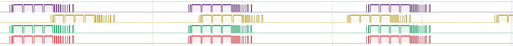
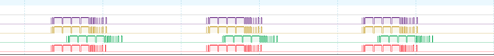

Synchronization and triggering
The O3R platform is built for highly precise timing at the system level, which includes a VPU and up to six heads connected through dedicated ports. The Trigger Control Unit (TCU) internally triggers all 3D TOF image sensors (excluding RGB sensors), ensuring more precise timing than can typically be achieved with an external method, for example compared to software-triggering on ifm O3D3xx cameras over a network.
Triggering can operate in either “RUN” or “IDLE” states.
In the “RUN” state, the system is triggered at regular intervals based on the framerate and delay parameters. This is also referred to as the free-running state, where the cameras operate at the desired framerate, synchronized to a common time base.
All cameras set to “RUN” state and configured to the same framerate are automatically synchronized. A delay can be set between groups of synchronized cameras.
In the “IDLE” state, triggering occurs only when a software trigger signal is received. Until then, the camera is inactive.
For multiple independent systems, a software trigger is required, or systems can be synchronized using NTP (Network Time Protocol) if NTP’s accuracy is sufficient.
Configuration
The time synchronization and the trigger functionalities can be configured with the following settings:
Parameter |
Value |
Description |
|---|---|---|
|
1/sec |
Acquisition framerate |
|
ms |
Time offset to first trigger group |
|
[0,6] |
Software trigger group |
All cameras configured to the same framerate are always synchronized.
The figure below shows the signals received from four different cameras running at 10Hz.

The figure below shows the signals received from four different cameras running at 10 Hz. However, the second camera (yellow signal) is operating at 12 Hz.

The delay parameter specifies the minimum time interval in milliseconds between the default framerate loop and the image sensor trigger. As shown in the image below, the third camera (green signal) is set to 10 fps with a delay of 10 ms.

Cameras that share the same swTriggerGroup parameter are synchronized when in the “RUN” state. When in the “IDLE” state, triggering any camera in the group will simultaneously trigger all cameras in that group.
By default the value of swTriggerGroup is 0 which means that the port is triggered independently from all the other ports.
Overall system latency and repeatability
The typical overall sensor system latency depends on several factors:
Internal system latency and jitter:
Jitter of the system when in a free-running state,
Delay between the moment the trigger command is sent and when it is received.
External latency:
Network latency when sending trigger signals,
Network latency when sending data via the network.
Data processing latency: depends on the algorithm, application and hardware.
Note
The jitter for an O3R camera head is approximately 1ms, and the framerate about 0.2ms.